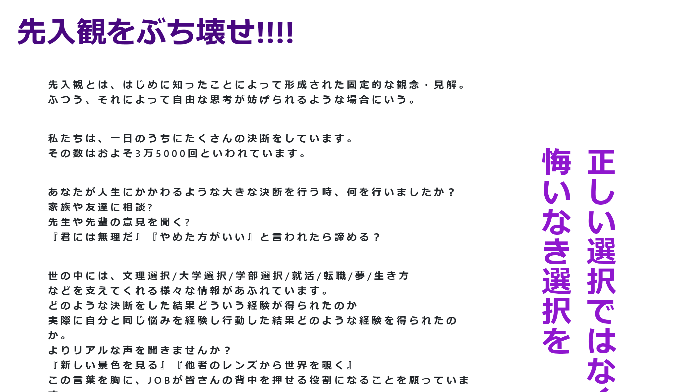

詳細
サイト名:JOB
・ポートフォリオURL:54.178.111.149
・GitHub URL:https://github.com/naaaaaaamiii/job
・README
・使用言語:HTML,CSS,JavaScript,Ruby,SQL
・フレームワーク:Ruby on Rails
ポイント
先入観をぶち壊したいという思いからこのサイトを作成しました。
オープンキャンパスのように自分がついている職業や目指している夢
生き方など様々なことをオープンにすることで自分の経験が誰かのためになる！
同じような経験の壁にぶつかって一歩先を歩いている人達の話を聞く！
人か勇気をもらうことで、挑戦することを惜しまない!
むしろわくわくしてくる！という経験をみんなに感じてほしいです!
わくわくの連鎖をとめないで！
